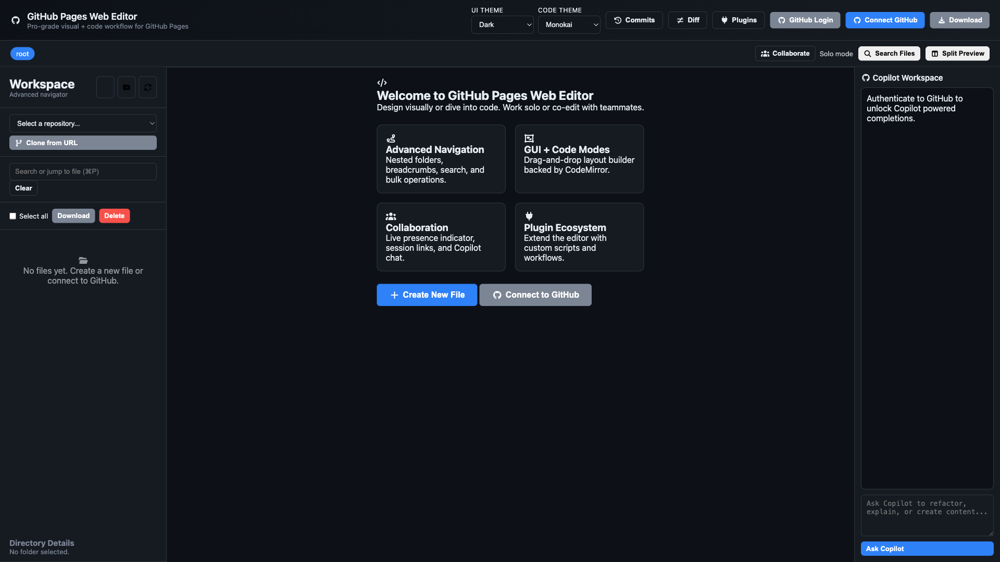
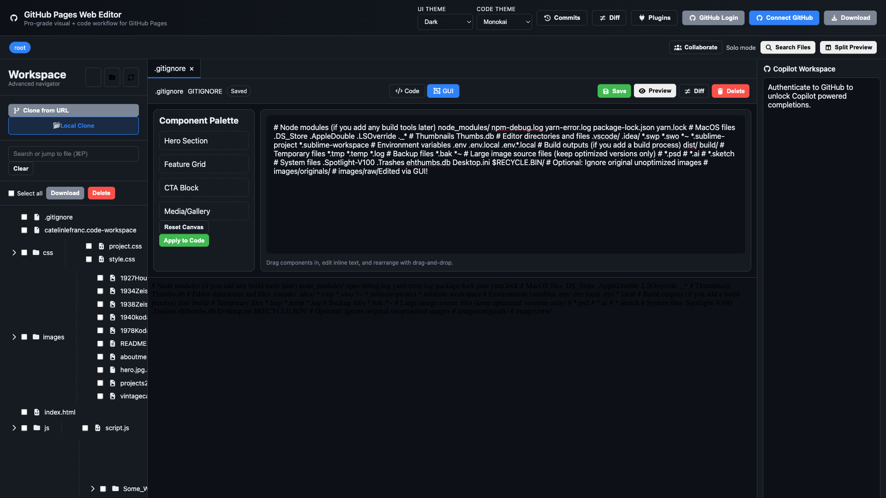
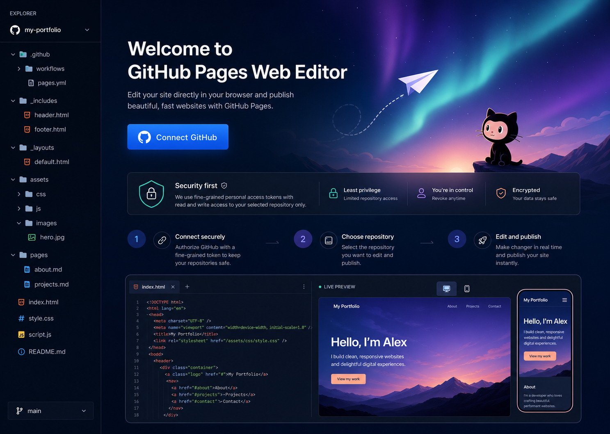

GitHub Pages, without the Git busywork
Edit your site. Preview it. Export it.
Buildy is a downloadable desktop workspace for making real website changes in code or visually, then exporting a finished site whenever you are ready.
Buildy is distributed privately after purchase or invitation. Your website files stay on your computer.

A calmer publishing flow
From idea to upload in three steps.

1Open your site
Import an existing site ZIP or start from a blank website template.

2Edit with confidence
Use code or visual editing and preview the result with your local assets.

3Export and publish
Download a complete ZIP, then upload its files to the GitHub repository that publishes your site.
Portfolio pages
Sites to open, study and shape.
These personal portfolio pages are examples of the kinds of static sites Buildy is designed to help you edit, preview and export. They are portfolio references, not claims that Buildy created them.
Built for real sites
Keep control of every file.
Make the change locally, inspect it in the preview, and upload the exported files through GitHub whenever you choose. Your existing Pages workflow remains the source of truth.
Multi-file code editing and visual element selection
Sandboxed preview with local assets
ZIP import and export for handoffs and backups
No account, token, or server configuration required
Private early access
Pay once, then get your copy.
Buildy is not distributed through a public repository or open release list. Join the waitlist and we will send pricing, availability and a secure download after payment or invitation.
Private early access
Join the Buildy waitlist.
Tell us where you would use Buildy. We will contact you with the current one-time project price, availability and a secure download route.